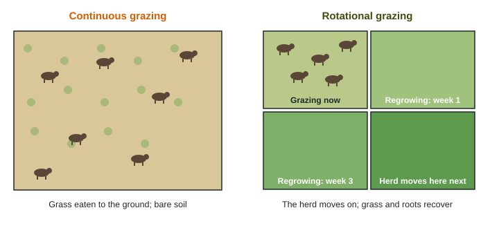

Meat Production Methods
Meat is produced in concentrated animal feeding operations, which are cheap and use little land on site but concentrate manure and depend on feed crops, or on pasture by free-range and rotational grazing, which spreads the impact but needs more land.
Part 1 · Hook
Why this matters
Part 2 · Before you start
What this builds on
Part 3 · Prerequisite check
Quick check before you start
1. About what share of the energy at one trophic level reaches the next level?
- About 10%
- About 50%
- About 90%
- About 1%
Show the answer
Most energy is used for life processes and lost as heat, so about 10% passes on.
- Correct: About 10%:
- About 50%:
- About 90%:
- About 1%:
2. What happens when a population overshoots its carrying capacity?
- It damages its resources and then declines (dies back)
- It keeps growing at the same rate forever
- Its carrying capacity rises to match it
- Its birth rate rises sharply
Show the answer
Overshoot uses up resources faster than they renew, so the population and often the carrying capacity fall.
- Correct: It damages its resources and then declines (dies back):
- It keeps growing at the same rate forever:
- Its carrying capacity rises to match it:
- Its birth rate rises sharply:
Part 4 · See it
See it first

Part 5 · Step by step
How it works, step by step
- More cattle graze a pasture than its grass can supportgrass is eaten faster than it regrows (overgrazing)
- Plants and roots die and hooves pack the bare soilrain runs off and wind and water erode the topsoil
- In a dry region, soil and plant cover keep being lostthe land becomes desert-like (desertification)
- Fewer plants and poorer soil support less grazingranchers crowd animals onto the land that is left, and the cycle speeds up
Part 6 · Key ideas
Key ideas
- Concentrated animal feeding operations (CAFOs, feedlots) raise many animals in a small space on grain. Cheap and land-efficient on site, but they concentrate manure, use antibiotics heavily and need large areas of cropland for feed.
- Free-range and rotational grazing spread animals over pasture. Manure fertilizes the land. Rotation lets each paddock regrow, but grazing needs much more land per kilogram of meat.
- Overgrazing strips plants, compacts and erodes soil, and in dry regions can lead to desertification.
- Meat sits a trophic level above plants, so it takes several kilograms of feed to make one kilogram of meat. Cattle also release methane as they digest grass.
Part 7 · Misconception
A common mistake
The wrong idea: Feedlots use less land than grazing, so feedlot beef has no land cost.
What actually happens: The feedlot itself is small, but the corn and soybeans the animals eat are grown on large areas of cropland elsewhere, with their own fertilizer, water and fuel.
Part 8 · Check yourself
Check yourself
Exam-style questions. Anything you miss goes into your review queue.
1. Which describes a concentrated animal feeding operation (CAFO)?
- Many animals crowded into a small space and fed grain
- A few animals moved between fenced paddocks so the grass can regrow
- Animals that roam freely over large areas of open rangeland
- Fish raised in floating pens in a bay
Show the answer
A CAFO (feedlot) crowds many animals into a small area and brings the feed to them.
- Correct: Many animals crowded into a small space and fed grain: Right: that is a feedlot.
- A few animals moved between fenced paddocks so the grass can regrow: That describes rotational grazing.
- Animals that roam freely over large areas of open rangeland: That describes free-range grazing.
- Fish raised in floating pens in a bay: Raising fish in pens is a different topic later in this unit.
2. Which is an advantage of a CAFO compared with grazing cattle on pasture?
- It produces meat quickly and cheaply on a small area of land
- Its manure is spread thinly over the land where the animals live
- Its animals need no grain or other crops brought in as feed
- Its animals are given fewer antibiotics than on pasture
Show the answer
Feedlots fatten animals fast on grain, so meat is cheap and the facility needs little land.
- Correct: It produces meat quickly and cheaply on a small area of land: Right: speed, low cost and a small footprint on site.
- Its manure is spread thinly over the land where the animals live: In a CAFO manure is concentrated, not spread thinly.
- Its animals need no grain or other crops brought in as feed: CAFOs depend on feed grain grown elsewhere.
- Its animals are given fewer antibiotics than on pasture: CAFOs use antibiotics heavily to prevent disease in crowded animals.
Data
Feed and land for three kinds of meat
| Meat | Feed needed (kg of feed per kg of weight gained) | Land used (m² per kg of meat per year) |
|---|---|---|
| Beef (feedlot) | 8 | 40 |
| Pork | 4 | 12 |
| Chicken | 2 | 8 |
3. Which ranking matches the table, from the most feed per kilogram of weight gained to the least?
- Beef, pork, chicken
- Chicken, pork, beef
- Pork, beef, chicken
- Beef, chicken, pork
Show the answer
Feed per kilogram: beef 8, pork 4, chicken 2.
- Correct: Beef, pork, chicken: Right: 8 > 4 > 2.
- Chicken, pork, beef: That is from least to most.
- Pork, beef, chicken: Beef needs more feed than pork.
- Beef, chicken, pork: Pork needs more feed than chicken.
4. How many square meters of land are used each year to produce 50 kg of pork?
Type a number, then its unit (m2). Scale words (2.5 million) and powers of ten (2.5 × 10^6) are read.
Show the answer
- Answer: 600 m2
5. A family eats 60 kg of beef a year and switches to 60 kg of chicken instead. Write the setup for the land saved each year, then give the answer with its unit.
Type the setup as on the exam, with brackets and units, then the answer.
Show the answer
- Setup: ; answer 1920 m2
Passage
A rancher's letter about grazing on public land
Our county lets ranchers graze cattle on 40,000 hectares of public grassland, and the county board wants to cut the number of cattle allowed by one third. I think that is the wrong fix. The grass did not thin out because there are too many cattle; it thinned because cattle stay in one place all season. On my own land I split the pasture into eight paddocks and move the herd every few days. After six years my grass is thicker and I run more cattle than when I started.
Instead of a cut, the board should require rotational grazing on the public land and pay for the fences and water tanks it takes. A cut in herd size will put small ranches out of business, and the land will be no better off if the cattle that remain still graze the same spots all season.
Invented passage for practice.
6. What is the author's main claim?
- The county should require rotational grazing instead of a cut
- The county should cut the number of cattle on public land by one third
- The county should end grazing on its public grassland for good
- The county should sell the public grassland to private ranchers
Show the answer
The author argues against the cut and for requiring rotational grazing paid for by the county.
- Correct: The county should require rotational grazing instead of a cut: Right: rotation instead of a cut.
- The county should cut the number of cattle on public land by one third: That is the board's plan, which the author opposes.
- The county should end grazing on its public grassland for good: The author wants grazing to continue.
- The county should sell the public grassland to private ranchers: The author does not propose selling the land.
7. Which assumption does the author's argument depend on?
- What worked on one ranch will also work on the public grassland
- Fewer cattle on the public land will by itself make the grass grow back thicker
- Small ranches can easily survive a one-third cut in the cattle they graze
- Fences and water tanks will cost the county more than they are worth
Show the answer
The only evidence is one ranch. The argument assumes those results transfer to 40,000 hectares of public land.
- Correct: What worked on one ranch will also work on the public grassland: Right: the argument generalizes from one ranch.
- Fewer cattle on the public land will by itself make the grass grow back thicker: The author argues that fewer cattle alone will not help.
- Small ranches can easily survive a one-third cut in the cattle they graze: The author says small ranches would go out of business.
- Fences and water tanks will cost the county more than they are worth: The author wants the county to pay for fences and tanks.
Part 9 · Summary
Summary
Part 10 · Up next
What comes next
Part 11 · Connections